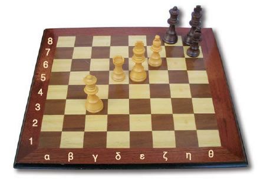
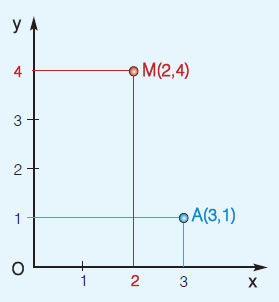
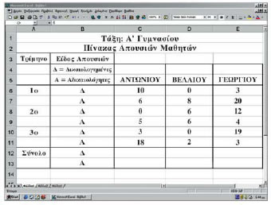
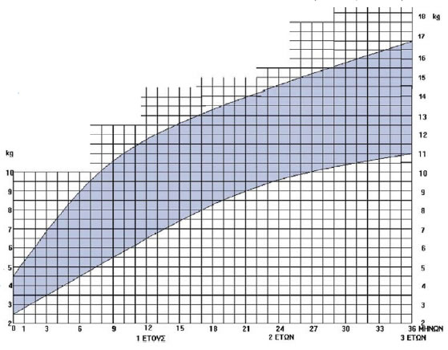

Α.6.1. Παράσταση σημείων στο επίπεδο |
| Στα προηγούμενα τοποθετήσαμε τους φυσικούς αριθμούς πάνω σε μια ευθεία. Τώρα θα ανοίξουμε λίγο τον ορίζοντά μας και από την ευθεία πάμε στο επίπεδο. Είναι εύκολο. Αρκεί να πάρουμε δύο κάθετες ευθείες και έχουμε μπροστά μας ένα επίπεδο που έχει πολλά να μας δείξει. Ας τα δούμε ξεκινώντας με μια παρτίδα σκάκι. |
| ΔΡΑΣΤΗΡΙΟΤΗΤΑ 1η |
 |
Σε μια εφημερίδα δημοσιεύτηκε μια παρτίδα σκάκι, όπως είναι αυτή που φαίνεται στη παρακάτω σκακιέρα.
- Δώσε ονομασίες για τις θέσεις των πιονιών που βρίσκονται στη συγκεκριμένη σκακιέρα και φτιάξε ένα πίνακα με αυτές.

|
|
| ΔΡΑΣΤΗΡΙΟΤΗΤΑ 2η |
| |
Η θερμοκρασία ενός ασθενούς κατά την τρίτη ημέρα νοσηλείας του, φαίνεται στον παρακάτω πίνακα. |
|
| 7:30 |
9:00 |
10:00 |
11:00 |
12:30 |
13:30 |
14:30 |
16:00 |
18:00 |
20:00 |
21:30 |
23:00 |
| 37,2 |
37,7 |
37,9 |
38,6 |
39,2 |
38,2 |
37,2 |
37 |
36,6 |
37,8 |
38,2 |
37,1 |
|
| |
- Μπορείς να παραστήσεις αυτόν τον πίνακα με έναν άλλο τρόπο;
- Πώς θα μπορούσαμε να έχουμε μια εκτίμηση της θερμοκρασίας του ασθενούς τις ώρες που δεν μετριέται αυτή;
|
|
|
| |
|
| |
Προκειμένου να προσδιορίσουμε τη θέση ενός σημείου στο επίπεδο: Σχεδιάζουμε δύο κάθετες μεταξύ τους ημιευθείες Οx και Οy. Πάνω σε κάθε μια απ' αυτές ορίζουμε την ίδια μονάδα μέτρησης. Αυτές οι ημιευθείες αποτελούν ένα σύστημα ημιαξόνων. |
 |
-
Ο ημιάξονας Οx λέγεται ημιάξονας των τετμημένων ή ημιάξονας των x.
-
Ο ημιάξονας Οy λέγεται ημιάξονας των τεταγμένων ή ημιάξονας των y.
-
Το σημείο Ο ονομάζεται αρχή των ημιαξόνων
- To 3 είναι η τετμημένη του σημείου Α
- To 1 είναι η τεταγμένη του σημείου Α
|

|
- Η τετμημένη και η τεταγμένη του σημείου Α ονομάζονται συντεταγμένες του Α και συνήθως όταν θέλουμε να αναφερθούμε στο σημείο Α, γράφουμε Α(3,1).
- Το ζεύγος (3,1) του οποίου ο πρώτος αριθμός 3 είναι η τετμημένη του σημείου Α και ο δεύτερος αριθμός 1 είναι η τεταγμένη του σημείου Α, λέγεται διατεταγμένο ζεύγος, επειδή έχει σημασία η διάταξη, δηλαδή η σειρά, με την οποία γράφονται οι αριθμοί που το αποτελούν.
- Με το σύστημα αυτό αντιστοιχούμε σε κάθε σημείο Α ένα ζεύγος αριθμών (3,1), δηλαδή ένα διατεταγμένο ζεύγος, οι αριθμοί του οποίου ονομάζονται συντεταγμένες του σημείου.
- Αντίστροφα, κάθε διατεταγμένο ζεύγος θετικών αριθμών π.χ. το (2,4) αντιστοιχεί σε ένα σημείο Μ του επιπέδου.
- Το σύστημα ημιαξόνων που χρησιμοποιήσαμε λέγεται ορθοκανονικό, γιατί οι ημιάξονες τέμνονται κάθετα (ορθο-) και έχουμε ορίσει πάνω τους την ίδια μονάδα μέτρησης (-κανονικό).
Μικροπείραμα 
|
|
|
| |
| ΑΣΚΗΣΕΙΣ ΚΑΙ ΠΡΟΒΛΗΜΑΤΑ |
|
|
Να σχεδιάσεις ένα ορθοκανονικό σύστημα ημιαξόνων, με μονάδα το 1 cm και να τοποθετήσεις τα σημεία Α(2,3), Β(3,2), Γ(4,5), Δ(5,5), Ε(1,4), Ζ(7,3), Η(7,2), Θ(6,2), 1(6,0), Κ(0,5). Τι παρατηρείς για τα σημεία Ι και Κ; Πού βρίσκονται αυτά; Μπορείς να γενικεύσεις τις παρατηρήσεις σου για τα σημεία που έχουν τετμημένη ή τεταγμένη το μηδέν;
Μικροπείραμα
|
 |
 |
Σε ορθοκανονικό σύστημα ημιαξόνων να τοποθετήσεις τα σημεία Α(2,1), Β(1,2), Γ(2,3) και Δ(3,2). Τι σχήμα είναι το ΑΒΓΑ; Αν τα ευθύγραμμα τμήματα ΑΓ και ΒΔ τέμνονται στο σημείο Κ, ποιες είναι οι συντεταγμένες του; |
 |
Γράψε πέντε διατεταγμένα ζεύγη σημείων, των οποίων η τετμημένη τους είναι ίση με την τεταγμένη τους. Μπορείς να τα τοποθετήσεις, σε ένα ορθοκανονικό σύστημα ημιαξόνων; Τι παρατηρείς;
Μικροπείραμα
|
 |
|
Στο παρακάτω σχήμα βλέπουμε τμήμα ενός πίνακα απουσιών ανά τρίμηνο, για τους μαθητές της Α΄ Γυμνασίου ενός σχολείου. Κάθε θέση του πίνακα ορίζεται από το ζεύγος (γράμμα στήλης, αριθμός γραμμής).
| (α) |
Σε ποια θέση βρίσκεται το όνομα του μαθητή Γεωργίου; |
| (β) |
Τι αντιπροσωπεύει ο αριθμός που βρίσκεται στη θέση C8;
|
| (γ) |
Ποιος αριθμός πρέπει να γραφεί στη θέση D12 και ποιος στη θέση Ε13; |
Μικροπείραμα
|
 |
| Λογιστικό φύλλο EXCEL |
|
|
| |
| ΔΡΑΣΤΗΡΙΟΤΗΤΑ ΠΑ ΤΟ ΣΠΙΤΙ |

|
Σε κάθε βιβλιάριο υγείας παιδιού, που παρέχει το Υπουργείο Υγείας και Πρόνοιας, υπάρχει το παρακάτω διάγραμμα, το οποίο παριστάνει την καμπύλη αύξησης του βάρους των βρεφών από 0 έως 3 ετών. Παρατήρησέ το προσεκτικά και απάντησε στα παρακάτω ερωτήματα:
(α) Ποιο είναι το μικρότερο και ποιο το μεγαλύτερο φυσιολογικό βάρος ενός βρέφους ηλικίας 15 μηνών;
β) Πάνω από ποιο βάρος θεωρείται υπέρβαρο ένα βρέφος ηλικίας 18 μηνών και κάτω από ποιο βάρος θεωρείται λιποβαρές;
(γ) Είναι φυσιολογικό το βάρος των 7,5 κιλών για ένα βρέφος 9 μηνών;
|
 |
|
|